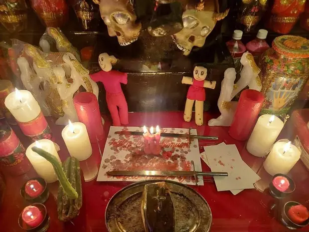
Amarres de Pareja
Consulta $0Ritual para fortalecer el amor y la unión entre dos personas. Se trabaja con velas, inciensos y elementos simbólicos para reavivar el vínculo y calmar los conflictos de la relación.
Más información →Brujo · Santero · Curandero
Amarres de amor y brujería que de verdad funcionan
Soy un brujo con una larga trayectoria y muy buena reputación en el mundo de la brujería. Llevo más de 20 años estudiando y practicando este arte, y en ese tiempo he ayudado a cientos de personas a conseguir lo que más desean en el amor, en lo personal y en lo profesional.
Trabajo con velas y hierbas mágicas para potenciar cada hechizo y conjuro, y realizo rituales y ceremonias para atraer el amor, la pasión y la felicidad. También hago limpiezas espirituales y libero a mis clientes de energías y entidades negativas que no los dejan avanzar.
Muchas personas me escriben solo para agradecer, porque su vida cambió después de nuestro trabajo. Si estás pasando por un momento difícil, escríbeme sin compromiso: cuéntame tu caso y juntos buscamos la solución.
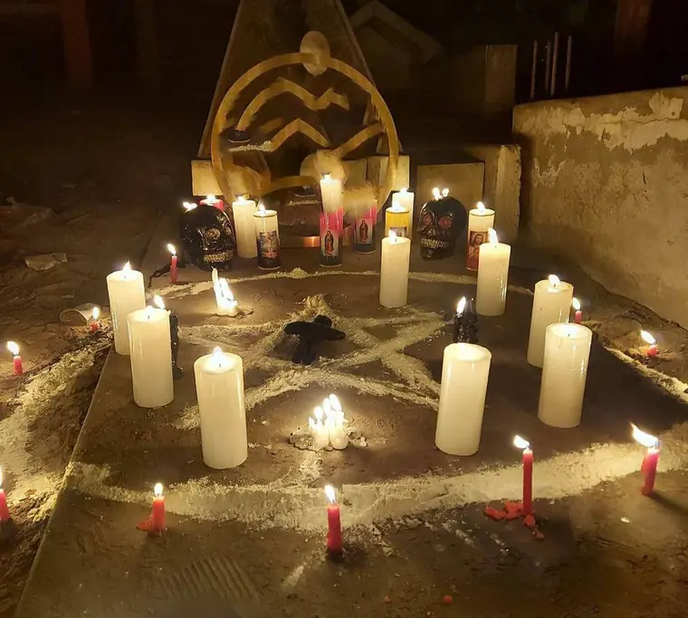
Soy un maestro santero y esoterista con más de 25 años ayudando a cientos de personas en el área del esoterismo. Brujo experto en los diferentes tipos de magia —negra, blanca y roja— para atender cada caso con la fuerza que necesita.
No dudes en contactarme para más información sobre mis servicios y cómo puedo ayudarte. Juntos encontraremos la solución mágica que necesitas para volver a ser feliz. ¡Te espero!
Consultar gratis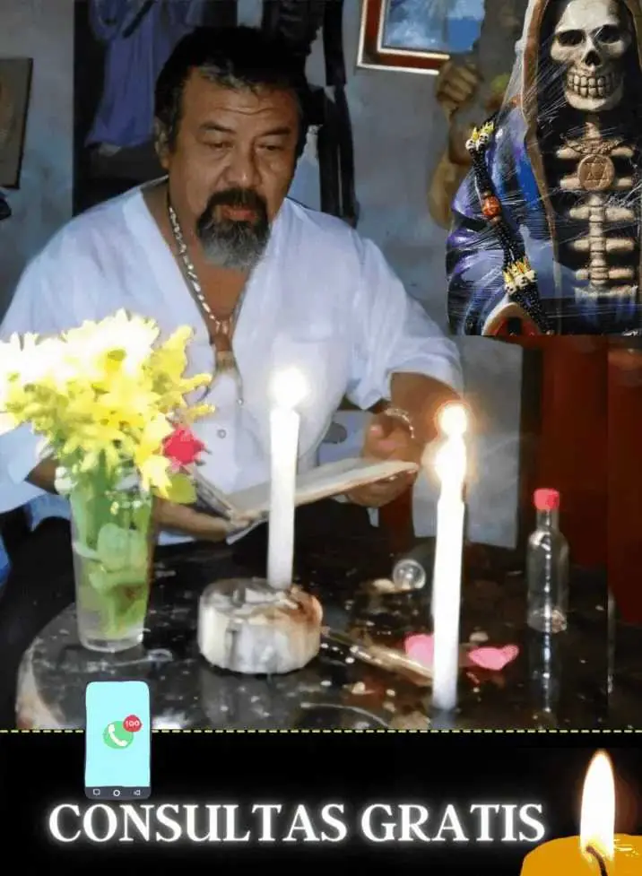
Estos son algunos de los mensajes que recibo cada semana de personas que ya recuperaron su relación y su tranquilidad.
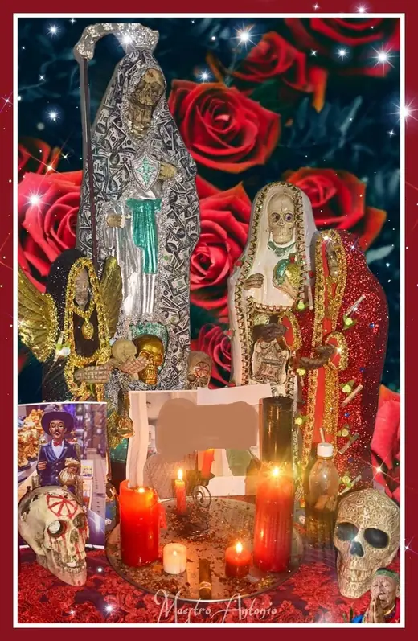
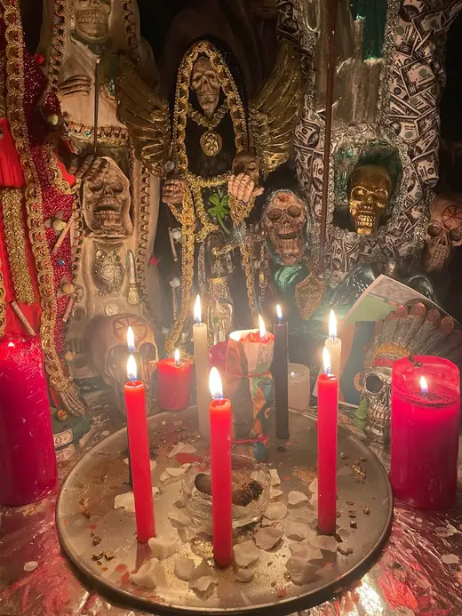
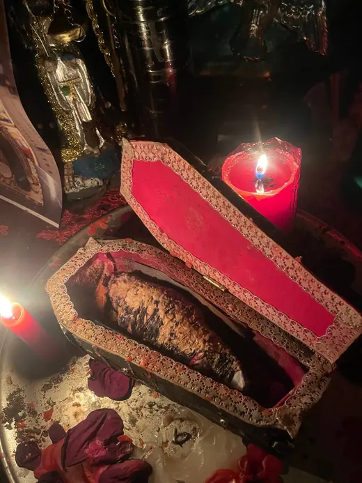
Cada trabajo empieza con una consulta gratis para valorar tu caso. Consultas $0 y pagas solo cuando ves resultados.

Ritual para fortalecer el amor y la unión entre dos personas. Se trabaja con velas, inciensos y elementos simbólicos para reavivar el vínculo y calmar los conflictos de la relación.
Más información →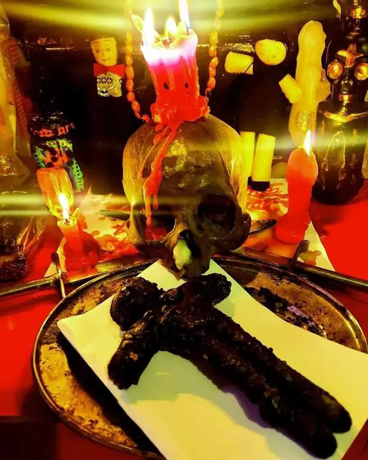
La magia negra trabaja con energías más intensas y se reserva para los casos difíciles, cuando otros caminos no han dado resultado. Requiere experiencia y responsabilidad, por eso parte siempre de una consulta previa.
Más información →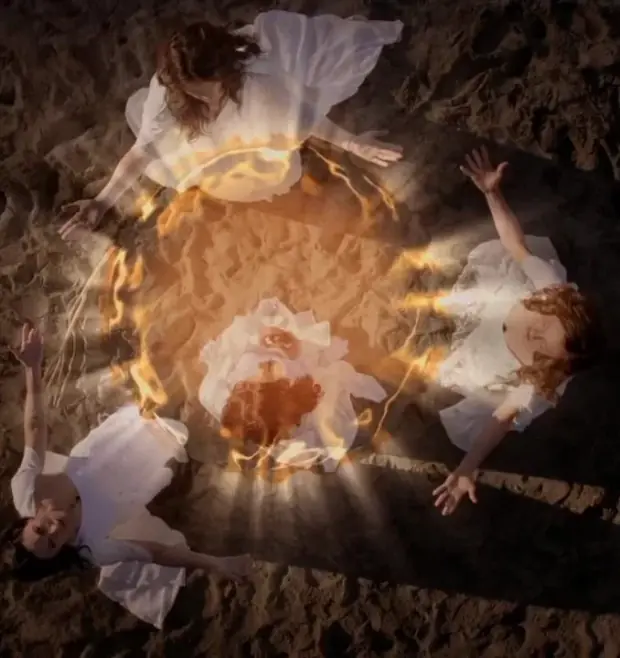
Magia enfocada en el bienestar y la protección. Ayuda a superar obstáculos, manifestar tus deseos y atraer la buena fortuna. Se basa en el amor, la luz y la energía pura.
Más información →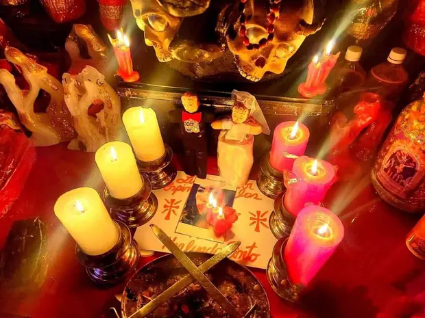
Magia centrada en la energía sexual, la pasión y el deseo. Se utiliza para atraer a una persona, reavivar el fuego en la pareja y acompañar el crecimiento personal.
Más información →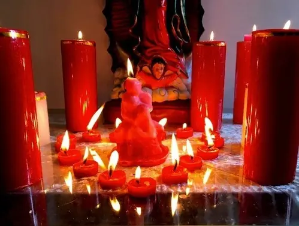
Hechizo para atraer el amor y suavizar el trato en la relación. Se usan miel, canela y azúcar como símbolos de dulzura, junto a velas rojas para acercar a la persona deseada.
Más información →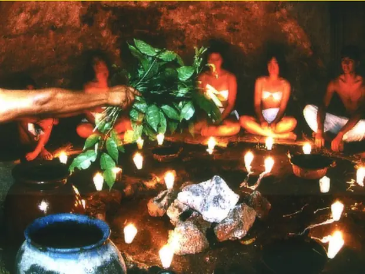
Rituales para liberar la energía negativa y las malas influencias que afectan a una persona, un hogar o un negocio. Se trabaja con sal, agua, inciensos y cristales para purificar el ambiente.
Más información →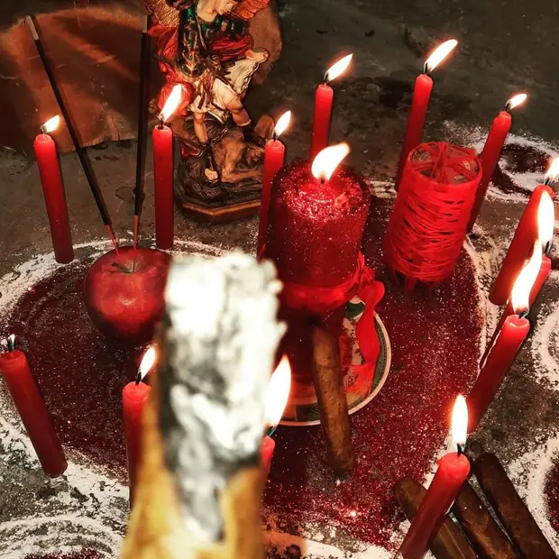
Trabajo para separar de forma definitiva a dos personas, cuando alguien necesita cerrar un ciclo o evitar que una relación que hace daño vuelva a unirse.
Más información →Rituales para atraer el amor y afianzar la lealtad y el compromiso en la pareja. Cada amarre se analiza con una consulta previa para tener plena certeza del proceso a realizar.
Más información →Los poderosos amarres del maestro Ovidio se analizan con una consulta previa, para determinar qué tipo de amarre corresponde y tener plena seguridad del buen desarrollo del proceso. Lo importante es una buena canalización de la energía y la certeza de que esa persona a la que dirigimos el amarre es con quien de verdad quieres pasar el resto de tu vida.
Además de los amarres, trabajo con velas y hierbas mágicas para potenciar cada hechizo. Puedo ayudarte a atraer el amor y la pasión con velas rojas y rosas, o a fortalecer la conexión entre dos personas con velas verdes y marrones.
También uso hierbas como la lavanda, el romero o la manzanilla para crear un ambiente propicio para el amor y la felicidad, y sales especiales para limpiar tu hogar y tu aura de cualquier negatividad.
Me aseguro de mantener la privacidad y la seguridad de todos mis clientes, para que puedas confiar en mí plenamente.
No pierdas la oportunidad: consulta al brujo Ovidio gratis para todo tipo de trabajos espirituales. Hacemos magia negra, blanca o roja. Brujo experto en alta magia.
Consultar gratis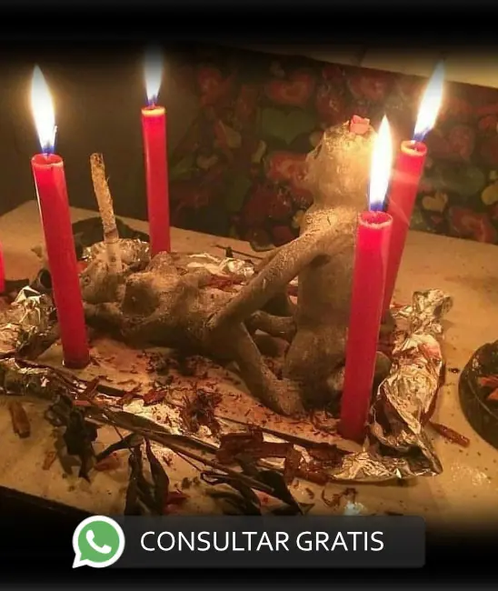
Toma las riendas y pon todo en su lugar. Quiero conocer tu caso; seguro tengo la solución para que seas feliz junto a quien deseas estar.
Cuéntame tu caso por WhatsAppComo garantía, con el maestro Ovidio solo pagas cuando empiezas a ver resultados en tu trabajo.
El santero no cobra por tus consultas. Usa su altar y sus herramientas esotéricas para develar tu caso.
No hacemos el trabajo y nos olvidamos de ti. Damos seguimiento a tu caso y mejoramos cada vez los resultados.
En todos los trabajos espirituales que realices con el maestro Ovidio. Llama ya, no pierdas la oportunidad.
Consultar por WhatsAppMis clientes son leales: no solo regresan y me recomiendan, sino que insisten en que sus amigos también consulten conmigo.
«Le recomiendo al maestro porque de verdad sabe hacer los trabajos y con buenos resultados. Busqué mucho a un buen maestro hasta que lo encontré.»
«Solo palabras de agradecimiento para el maestro Ovidio, porque me ayudó a regresar con mi pareja de la que tanto tiempo estuve separado.»
Resolvemos las dudas más habituales sobre la brujería y los trabajos de amor.
La brujería es una práctica ancestral que utiliza rituales y trabajos espirituales para influir de forma positiva en las emociones y en la vida de las personas. En temas de pareja se emplea para reforzar los lazos afectivos, calmar los conflictos y ayudar a que dos personas vuelvan a encontrarse.
Cada situación es única. Por eso lo primero es una consulta previa y gratuita, donde el maestro Ovidio escucha tu caso y te dice con sinceridad qué trabajo es el más adecuado para ti.
Como toda práctica espiritual, debe hacerse con responsabilidad. Por eso es importante trabajar con un experto que te guíe y te acompañe en cada paso del proceso, valorando siempre tu caso antes de actuar.
Sí, cuando el trabajo lo realiza un brujo con experiencia. El resultado depende de la habilidad de quien lo hace y de la energía de cada persona, por eso todo empieza con una consulta para valorar bien el caso.
Ofrecemos hechizos, conjuros, rituales y ceremonias pensados para sanar las relaciones rotas y fortalecer el vínculo entre las parejas. Cada trabajo se adapta a lo que necesita la persona.